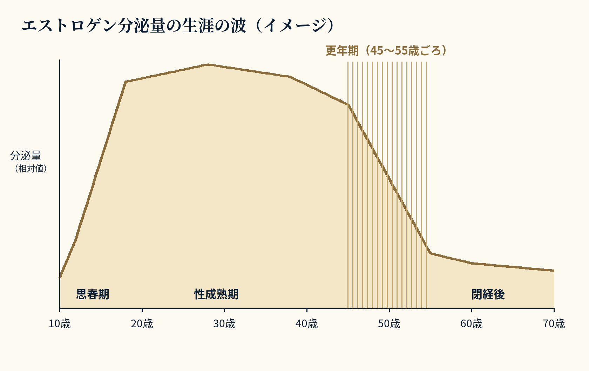

トップ › 美容整体の専門解説 › 女性ホルモンと年代別の変化
HORMONES & LIFE STAGES
女性ホルモンと年代別の変化
女性の体は、月単位のホルモンの波と、年代ごとの大きな変化の両方に支えられています。エストロゲンを中心に、その流れと年代に合わせたケアの考え方を解説します。
女性ホルモンとは何か｜エストロゲンとプロゲステロンの役割
女性ホルモンには主に、エストロゲンとプロゲステロンの2つがあります。エストロゲンは、肌や髪のうるおい、骨の健康、血管のしなやかさなど、体のさまざまな働きに関わるホルモンです。プロゲステロンは、月経周期の後半に増え、体を妊娠に備える方向へ調整する役割を持ちます。この2つは、月経周期の中で波のように増減を繰り返し、その波に伴って、体の感覚や気分の感じ方も少しずつ変化します。たとえば、周期の前半は体が軽く感じられる方がいる一方で、後半は水分をため込みやすく、重さや張りを感じやすい方もいます。どちらが良い・悪いではなく、波があること自体が体の自然なリズムです。図1のとおり、月単位の小さな波と、年代ごとの大きな流れは重なって存在しています。自分の周期のパターンを知っておくと、体の変化を予測しやすくなり、予定の立て方や休み方の工夫にもつながります。ホルモンの状態は検査で確認するものであり、この解説は体の仕組みを理解するための一般的な情報です。周期の乱れや気になる症状が続く場合は、医療機関への相談をおすすめします。仕組みを知ることは、変化に振り回されずに向き合うための土台になります。2つのホルモンの波は、体調だけでなく、集中力や人との関わり方の感じ方にも影響することがあります。自分の波を知ることは、暮らし全体の計画を立てるうえでも役立ちます。

月単位の波｜周期に伴う体の感覚の変化
月経周期は一般的に、月経期、卵胞期、排卵期、黄体期という流れで捉えられます。月経期から卵胞期にかけてエストロゲンが少しずつ増え、排卵期前後にピークを迎えます。その後、黄体期にはプロゲステロンが増え、エストロゲンは緩やかな波を描きます。この波に伴い、体温、食欲、眠気、水分のため込みやすさ、肌の状態などが変化することがあります。たとえば黄体期に脚が重く感じやすいのは、水分をため込みやすい時期の特徴と重なる場合があります。天王寺・阿倍野で働く方の中には、忙しい時期と周期の重なり具合で、同じ仕事でも疲れ方が違うと感じる方もいます。これは気のせいではなく、体のリズムが背景にある場合があります。周期の記録をつける習慣は、自分の波を知るための身近な方法です。体調や気分、眠りの様子を簡単にメモしておくだけでも、数か月後には自分のパターンが見えてきます。パターンが分かると、買い物や外出の予定を軽い時期に合わせる、重く感じる時期は夜の予定を控えめにするなど、暮らしの調整がしやすくなります。波に逆らうのではなく、波に合わせて過ごし方を変える視点が、日常のケアでは大切です。記録を続けるコツは、完璧を目指さないことです。体調の良し悪しを丸印で残すだけでも、波の傾向は見えてきます。数か月の記録が、自分の体を理解する貴重な資料になります。
20代・30代の変化｜働き盛りと暮らしの負担が重なる時期
20代は、エストロゲンの分泌が安定し、体の回復力も高い時期とされます。一方で、仕事や暮らしの変化が大きく、生活リズムが乱れやすい時期でもあります。天王寺・阿倍野のオフィスで働き始めた頃は、通勤や長時間のデスクワークに体が慣れる過程で、姿勢の偏りや肩の張りが表れやすくなります。30代に入ると、仕事の責任や家事・育児など、役割が増える方も多くなります。ホルモンの分泌量そのものはまだ大きく変わらない時期でも、疲れが抜けにくくなった、以前より体が重く感じる、といった感覚の変化を覚える方がいます。これは、分泌の変化だけでなく、睡眠時間の減少や活動量の変化、ストレスの蓄積など、暮らしの条件が重なった結果として現れることもあります。20代・30代のケアで大切なのは、体の土台を崩さない暮らしの型を作ることです。朝の光、歩く機会、夜の休息といった基本のリズムに加え、姿勢や筋肉のバランスを定期的に見直す習慣が、後の年代の土台にもなります。あべのハルカスでの買い物を歩く機会として楽しむなど、暮らしの中に自然な活動を取り入れる視点も、この年代には合った工夫です。この時期は、体の変化よりも暮らしの変化が先に負担として現れることもあります。疲れの背景を暮らしの条件から見直す視点が、ケアの方向を決める助けになります。
40代・50代の変化｜エストロゲンの大きな流れと節目
40代後半から50代にかけては、エストロゲンの分泌が大きく揺らぎながら減っていく時期とされます。この時期は更年期と重なり、のぼせや発汗、眠りの浅さ、気分の波など、さまざまな感覚の変化が現れることがあります。変化の現れ方や程度には個人差が大きく、同じ年代でも感じ方は一人ひとり違います。大切なのは、変化を「年齢のせい」と一括りにせず、体の大きな流れの中で起きていることとして理解することです。エストロゲンは骨や血管、肌の状態とも関わるため、この時期は暮らし全体の見直しが意味を持つ節目になります。歩く機会を保つこと、たんぱく質を含めた食事のバランス、眠りの環境を整えることなど、基本的な習慣の積み重ねが土台になります。また、姿勢や筋肉の面では、活動量の変化に伴ってお尻やお腹の筋肉が働きにくくなり、骨盤の傾きや背中の丸みが表れやすくなる時期でもあります。ケンダルの姿勢分類でいう現実的な崩れも、こうした変化と重なって進むことがあります。気になる症状が強い場合や長く続く場合は、医療機関への相談が優先です。そのうえで、日常のケアとして姿勢や巡りを見直すことが、この年代の暮らしを支える一つの方法になります。節目の時期こそ、無理をしない選択が大切になります。予定を詰め込みすぎず、休息の時間を確保することも、この年代のケアの重要な一部です。
年代に合わせたケアの考え方｜施術でできること
女性ホルモンの変化そのものは、施術で調整できるものではありません。ステラミモザ阿倍野の施術は医療行為ではなく、ホルモンに関わる診断や治療を行うものではありません。そのうえで、年代に伴って現れやすい姿勢の偏りや筋肉の張り、巡りの滞りといった体の状態に対して、手技で働きかけることは日常のケアの一つとして位置づけられます。たとえば、脚の重さを感じやすい時期には下半身の巡りを意識した配分に、肩や首の張りが強い時期には上半身を丁寧に扱うなど、その時期の体の感覚に合わせて施術を組み立てます。施術の時間は90分10,000円で、周期や年代による体の感覚の変化も伺いながら進めます。施術は、その時期の体に寄り添う時間としてご利用いただけます。また、施術の場で自分の体の状態を確認することは、暮らしの工夫を考えるきっかけにもなります。どの時期に脚が重くなりやすいか、どの時期に眠りが浅くなりやすいか。自分のパターンを言葉にしておくことは、年代の変化を前向きに受け止める助けになります。体の変化は避けられないものですが、向き合い方を選ぶことはできます。施術と日常の工夫を組み合わせることが、その選択肢の一つです。体の感覚を伺う時間は、施術の配分を決めるためだけでなく、ご自身が体の変化を言葉にする機会にもなります。気になることは、遠慮なくお伝えください。
波と付き合う暮らし方｜記録・休息・歩くこと
ホルモンの波と付き合う暮らし方には、記録・休息・歩くことの3つの柱があります。記録は、周期や体調、眠りの様子を簡単に残す習慣です。細かく書く必要はなく、スマートフォンのメモに一言残すだけでも、自分のパターンが見えてきます。休息は、重く感じる時期に予定を詰め込みすぎないこと、仕事帰りの夜に湯船や静かな時間を確保することなど、波に合わせた過ごし方を指します。歩くことは、巡りと筋肉の両面を支える基本の活動です。御堂筋線やJR環状線の通勤で一駅分歩く、あべのハルカスや天王寺での買い物を歩く機会として楽しむなど、暮らしの中に自然に組み込める形が続けやすくなります。年代が変われば、合う工夫も少しずつ変わります。20代で作った型をそのまま続けるのではなく、体の感覚に合わせて更新していく柔軟さが大切です。変化の時期は、暮らしを見直す機会でもあります。この解説が、自分の波を知り、年代に合ったケアを選ぶための参考になれば幸いです。気になる症状がある場合は医療機関への相談を優先し、日常のケアは無理のない範囲で取り入れてください。波を知ることは、自分を大切にする暮らし方の第一歩です。記録・休息・歩くことの3つは、どれも特別な準備が要らないものばかりです。今の暮らしの中でできる形に置き換えて、長く続けられる方法を選んでください。自分の波に合わせた暮らし方は、年代を重ねるほど大切になります。
関連する症状・お悩み
よくあるご質問
ホルモンバランスは施術で整いますか？
施術でホルモンそのものを調整することはできません。医療行為でもありません。姿勢や筋肉、巡りといった体の状態に働きかける日常のケアとしてご案内しています。
周期によって施術のタイミングは変えたほうがよいですか？
決まりはありません。脚の重さや張りを感じやすい時期など、体の感覚に合わせてご利用いただく方もいます。体調に不安がある日は無理のない範囲でご相談ください。
更年期の症状がつらい場合はどうすればよいですか？
症状が強い場合や長く続く場合は、まず医療機関へご相談ください。施術は日常のケアとして、医療と分けてご利用いただく位置づけです。
周期の記録はどのように付けるとよいですか？
体調や眠り、気分を一言メモするだけでも十分です。数か月続けると、自分の波のパターンが見えてきます。
年代によって施術内容は変わりますか？
基本の流れは同じですが、その時期に感じやすい張りや重さに合わせて配分を調整します。体の状態を伺いながら進めます。
専門解説シリーズ
施術者について
平賀 伸人（ひらが のぶひと／男性セラピスト）｜施術歴30年。鍼灸師（国家資格）・登録販売者・アロマセラピスト・パーソナルトレーナーの資格を持ち、オイルマッサージと美容整体を、その日の状態とご希望に合わせて組み合わせて施術します。このページの内容は、施術者の知識と経験をもとに作成しています。
料金・店舗情報
オイルマッサージ＋美容整体 90分 10,000円（税込）｜コースは1つだけです。有料の追加オプションの販売はありません。お支払いは現金のみです。
住所：大阪市天王寺区南河堀町10-3（天王寺駅・JR北口から徒歩4分／大阪メトロ御堂筋線 天王寺駅から徒歩5分）｜営業時間：月〜土 17:00〜22:00・日曜休み｜女性専用・完全予約制｜当サロンでは鍼灸施術は行いません。
ご予約・お問い合わせ
ご予約はLINE公式アカウントで受け付けています。ご希望の日時をお送りください。変更・キャンセルはLINEでご連絡ください。キャンセル料はいただきません。